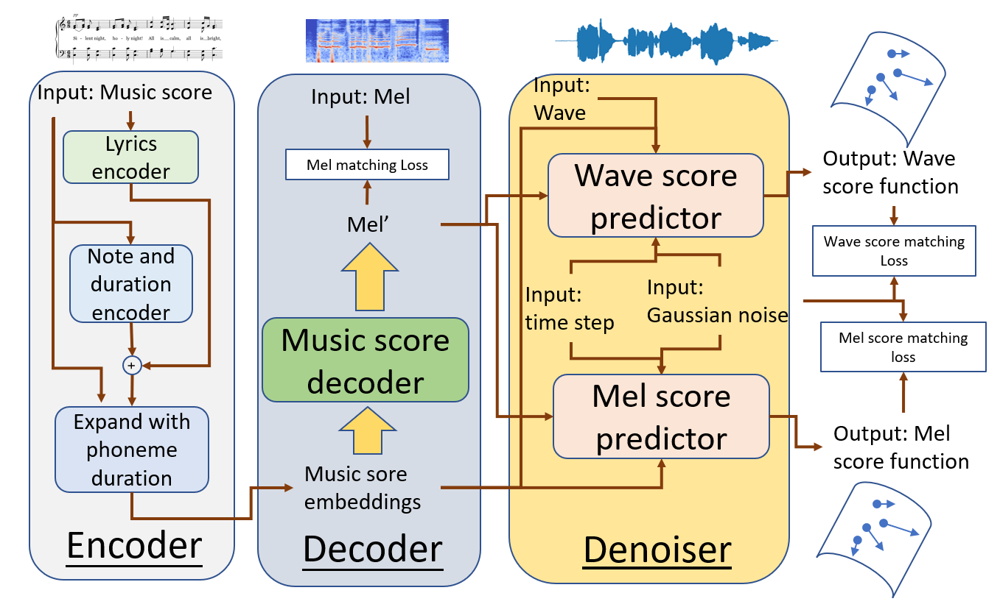
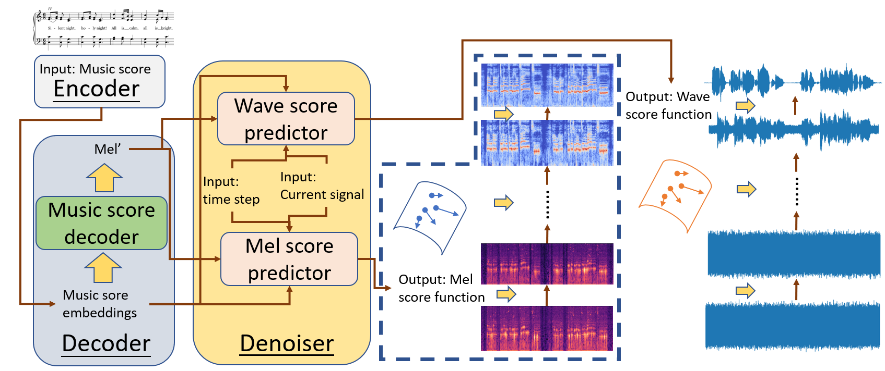

Anonymous.
This demo introduces RealSinger, which can generate ultra-realistic singing voice with given music scores as input. The music score contains lyrics, notes and duration.
Synthesizing high-quality singing voices from music scores is a challenging problem in music generation and has many practical applications. Samples generated by existing singing voice synthesis (SVS) systems can roughly reflect the lyrics, pitch and duration in a given score, but they fail to contain necessary details. In this paper, based on stochastic differential equations (SDE) we propose RealSinger to generate 22.05kHz ultra-realistic singing voice conditioned on a music score. Our RealSinger learns to find the stochastic process path from a source of white noise to the target singing voice manifold under the conditional music score, allowing to sing the music score while maintaining the local voice details of the target singer. During training, our model learns to accurately predict the direction of movement in the ambient Euclidean space onto the low-dimensional singing voice manifold. RealSinger's framework is very flexible. It can either generate intermediate feature representations of the singing voice, such as mel-spectrogram, or directly generate the final waveform, as in the end-to-end style which rectifies defects and accumulation errors introduced by two-stage connected singing synthesis systems. An extensive subjective and objective test on benchmark datasets shows significant gains in perceptual quality using RealSinger. The mean-opinion-scores (MOS) obtained with RealSinger are closer to those of the human singer's original high-fidelity singing voice than to those obtained with any state-of-the-art method.
The training pipeline of RealSinger.

The inference pipeline of RealSinger.

Please check the following singing voice samples synthesized by RealSinger and other compared systems. The corresponding lyrics are as follows:
1. Bào yī bào, jiù dàng zuò cóng méi yǒu zài yī qǐ, hǎo bù hǎo, yào jiě shì dōu yǐ jīng lái bu jí. (抱一抱, 就当作从没有在一起, 好不好, 要解释都已经来不及.)
2. Shì wǒ tài shǎ, shuō bu shàng ài bié shuō huǎng, jiù yī diǎn xǐ huān, shuō bu shàng hèn bié jiū chán. (是我太傻, 说不上爱别说谎, 就一点喜欢, 说不上恨别纠缠.)
3. Hǎo bù hǎo, yǒu kuī qiàn wǒ men dōu bié zài zhuī jiù, suàn le ba, wǒ fù chū zài duō dōu bù zú gòu. (好不好, 有亏欠我们都别再追究, 算了吧, 我付出再多都不足够.)
4. Jiù yī diǎn xǐ huān, shuō bu shàng hèn bié jiū chán, bié zhuāng zuò gǎn tàn. (就一点喜欢, 说不上恨别纠缠, 别装作感叹.)
5. Dāng wǒ bù zài nǐ huì bù huì nán guò, nǐ gòu bù gòu wǒ zhè yàng sǎ tuō, shuō bu shàng ài bié shuō huǎng. (当我不在你会不会难过, 你够不够我这样洒脱, 说不上爱别说谎.)
6. Yīn wéi chéng zhǎng, wǒ men hū ěr jiān shuō sàn jiù sàn. (因为成长, 我们忽尔间说散就散.)
7. Bù qù xiǎng, tā men yǒng yǒu měi lì de tài yáng, wǒ kàn jiàn, měi tiān de xī yáng yě huì yǒu biàn huà. (不去想, 他们拥有美丽的太阳, 我看见, 每天的夕阳也会有变化.)
8. Wǒ zhōng yú áo xiáng, yòng xīn níng wàng bù hài pà, nǎ lǐ huì yǒu fēng, jiù fēi duō yuǎn ba. (我终于翱翔, 用心凝望不害怕, 哪里会有风, 就飞多远吧.)
9. Wǒ zhōng yú kàn dào, suǒ yǒu mèng xiǎng dōu kāi huā, zhuī zhú de nián qīng, gē shēng duō liáo liàng. (我终于看到, 所有梦想都开花, 追逐的年轻, 歌声多嘹亮.)
10. Měi yī cì, dōu zài pái huái gū dān zhōng jiān qiáng, měi yī cì, jiù suàn hěn shòu shāng yě bù shǎn lèi guāng. (每一次, 都在徘徊孤单中坚强, 每一次, 就算很受伤也不闪泪光.)
| Ground truth | FFT-Singer | DiffSinger | RealSinger |
|---|---|---|---|
[1]. Anonymous. RealSinger: Ultra-Realistic Singing Voice Generation via Stochastic Differential Equations.